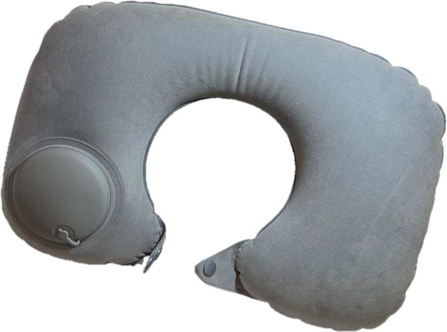
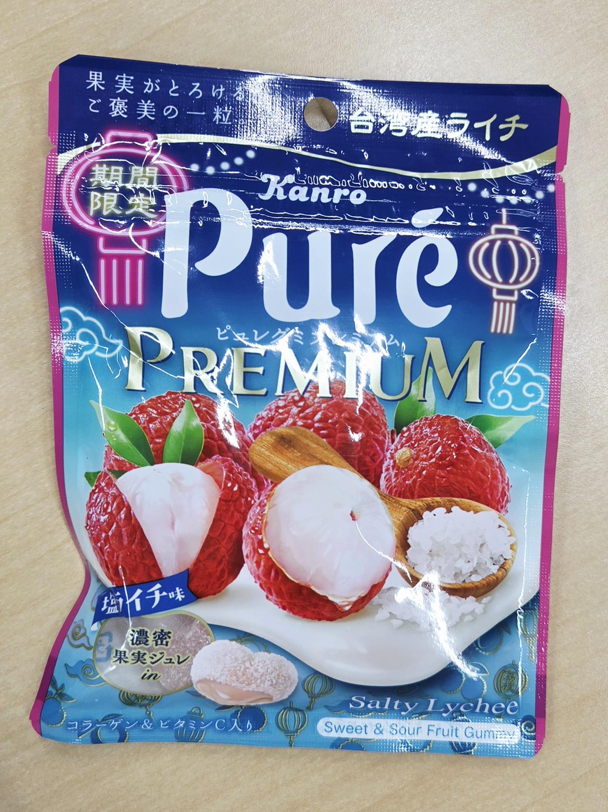

- トップ >
- たからばこ
たからばこ
日常でふと見つけた、かわいいもの、意外な便利グッズ、おもしろアニメ・漫画など（＝私の目に狂いはなかったものたち）を写真と共に紹介していきます。
更新スケジュール：不定期。月3回を目安に更新。
☆ かわいいやつらだいしゅうけつ ☆

＜tyokawaii＞かわいいやつら、だい・しゅう・けつ。みんなぷくぷくしやがって！！
☆ 頑張る人ほどこれTUKAE ☆

＜koreyosugi＞この世界に住んでる人はネックピローがどれだけ優秀なものなのか、知っているのでしょうか？この年齢でこの子の良さに気付けた私を褒めたいよ。この子がいればね、首が痛むことなんてほぼない。夜行バス乗るんだったらマストよほんと！（もっと言うと折りたたみタイプがオススメ☆）
☆ YOUの存在がP・RE・MI・U・M ☆

＜omoshiro＞
期間限定塩ライチ、一粒食べれば脳内スプラッシュマウンテン！！！フォーー！！！